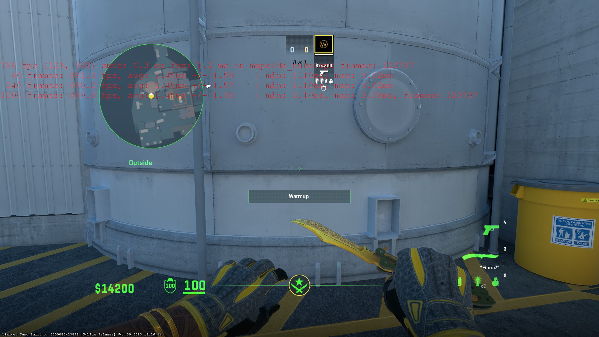
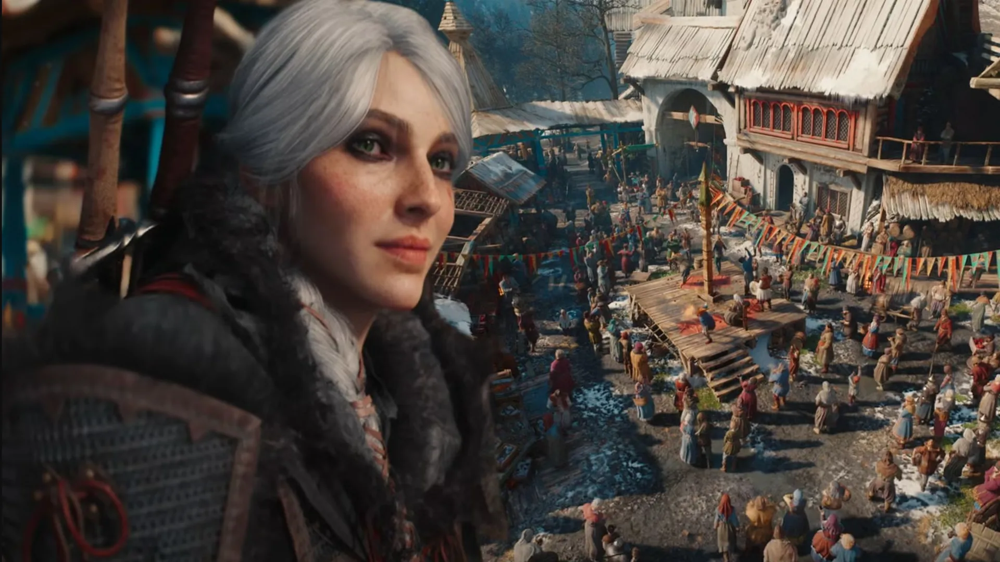
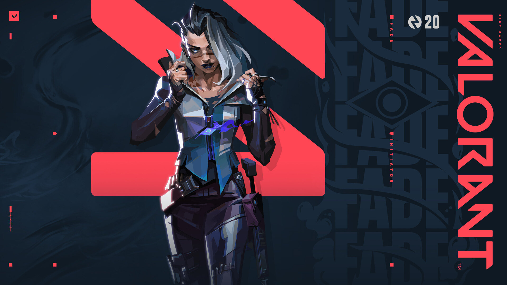
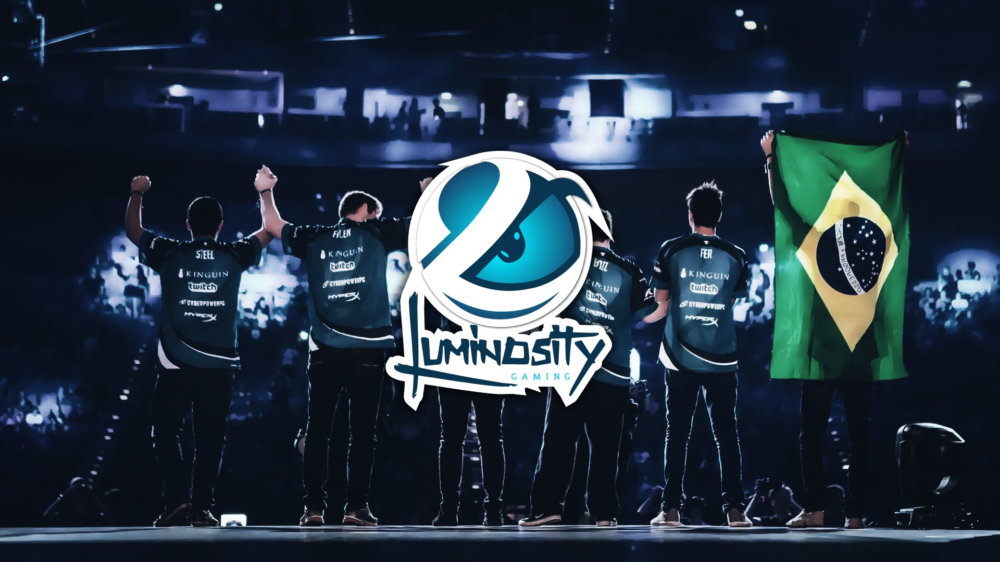

Прорыв в производстве: DDR5
Новое поколение бьет рекорды скорости на 40%

Инженеры ведущих технологических компаний представили обновленную архитектуру модулей оперативной памяти. Новые планки DDR5 с базовой частотой 8400 МГц уже поступили на тесты к ведущим оверклокерам мира.
Главным нововведением стала встроенная система контроля напряжения (PMIC) прямо на модуле, что снижает задержки и позволяет добиваться невероятной стабильности при разгоне. Ожидается, что на потребительский рынок новинка выйдет к концу года, но цены пока кусаются: за комплект из 32 ГБ придется отдать около $400.
Пик Забвения
Вертикальный геймплей и снежные ловушки
Разработчики популярного соревновательного шутера официально анонсировали следующую карту для рейтингового сезона. Локация переносит игроков в заснеженные высокогорья, где ключевым элементом стратегии станет контроль высоты.
Судя по первым кадрам, нас ждут многоуровневые базы, соединенные системой зиплайнов, и открытые пространства, простреливаемые снайперами. Особенностью карты станут динамические погодные условия: плотный туман и метели будут периодически снижать видимость.
ФПС на пределе
Как новый патч изменил производительность

После недавнего обновления игроки столкнулись с неожиданной проблемой: на новой локации с детализированным горным ландшафтом счетчик FPS у многих просел почти вдвое. Разработчики оперативно выпустили хотфикс, оптимизирующий отрисовку снежных текстур и теней от скал.
«В киберспорте важна каждая единица FPS. Если у тебя 144 герца монитор, а игра выдает 120 — ты уже в проигрыше», — объясняют технические специалисты. На картинке наглядно видно, как после настройки параметров запуска заветные цифры снова перевалили за отметку 300+.
Эпоха нейросетей в играх
NPC с искусственным интеллектом выходят из-под контроля

Небольшая инди-студия внедрила в свою новую RPG языковую модель на базе ИИ. Результат превзошел все ожидания: персонажи перестали говорить заученными фразами. Они помнят ваши поступки, могут обидеться на тон вашего голоса в микрофон и даже соврать, если им это выгодно.
Вчера произошел забавный инцидент: во время стрима популярного блогера торговец в игре отказался продавать ему зелья, аргументировав это тем, что "видел, как игрок пнул курицу в соседней деревне". Это открывает совершенно новый уровень погружения в виртуальные миры.
Анонс нового агента в Valorant
Контроллер, меняющий гравитацию

Riot Games наконец-то приоткрыли завесу тайны над 25-м агентом. Новый персонаж относится к классу "Контроллер" и его главная фишка — манипуляции с гравитацией на определенных участках карты.
Его ультимативная способность создает зону невесомости, в которой прыжки становятся выше, а звук шагов полностью исчезает. Про-игроки уже назвали эту механику "сломанной", предрекая персонажу 100% пикрейт на грядущем Masters.
Обзор RTX 5090
Монстр, которому нужен собственный блок питания

Долгожданный флагман от NVIDIA попал к нам на тесты. Видеокарта занимает почти четыре слота расширения и весит как хороший кирпич. Но что по производительности?
В Cyberpunk 2077 на максимальных настройках с трассировкой путей (Path Tracing) в разрешении 4K карта выдает стабильные 140 FPS без использования DLSS 3. Это невероятный скачок, однако энергопотребление в пике достигает 600 Вт, что потребует от геймеров обновления блоков питания.
Магнитная революция
Как новые свитчи в клавиатурах легализуют читы
Производители периферии массово переходят на клавиатуры с магнитными переключателями на эффекте Холла. Главная особенность технологии — возможность настроить точку срабатывания клавиши с точностью до 0.1 миллиметра. Это позволяет игрокам моментально останавливаться в шутерах (стрейфить) без малейших задержек.
Профессиональные киберспортсмены разделились на два лагеря. Одни считают это естественным развитием железа, другие требуют запретить функцию «Rapid Trigger» на турнирах, приравнивая её к аппаратным макросам. Пока организаторы молчат, продажи таких клавиатур бьют все рекорды.
Сенсация на Major
Команда из открытых квал выбила фаворитов турнира

Вчерашний игровой день на чемпионате мира подарил нам, возможно, самую красивую историю "Золушки" за последние пять лет. Микс из молодых игроков, собранный всего за месяц до турнира и прошедший через мясорубку открытых квалификаций, всухую обыграл действующего чемпиона со счетом 2:0.
Аналитики в шоке: у победителей не было ни тренера, ни буткемпа, а капитан команды координировал игру, параллельно сдавая сессию в университете. Завтра ребятам предстоит сыграть в полуфинале на стадионе перед 15 тысячами зрителей. За их спинами теперь поддержка всего комьюнити.
Движок будущего
Анонс Unreal Engine 6 раздвигает границы реализма
На ежегодной конференции разработчиков Epic Games неожиданно представила первые технодемки шестой версии своего знаменитого движка. Главный упор сделан на бесшовную интеграцию микро-полигональной геометрии Nanite с нейросетевым масштабированием, что позволяет рендерить кинематографичную картинку без "запекания" света.
Разработчикам обещают инструмент, который в реальном времени генерирует анимации лиц персонажей на основе аудиодорожки актера озвучки. Однако системные требования демки настораживают: для стабильных 60 кадров потребовалась связка из двух топовых видеокарт текущего поколения.
Эволюция VR-гейминга
Шлемы с отслеживанием зрачков меняют мета-игру
Рынок виртуальной реальности получил мощный толчок с выходом новой линейки VR-гарнитур премиум-класса. Ключевой технологией стал высокоточный трекинг глаз (Eye-Tracking). Благодаря ему система рендерит в максимальном разрешении только ту часть картинки, куда сейчас смотрит игрок, экономя до 40% ресурсов ПК.
В соревновательных VR-шутерах это привело к появлению новой механики: игроки могут "фейковать" взглядом, смотря в одну сторону, но целясь оружием в другую. Кроме того, технология позволила реализовать идеально точное прицеливание через оптические снайперские прицелы без рассинхрона движений головы.